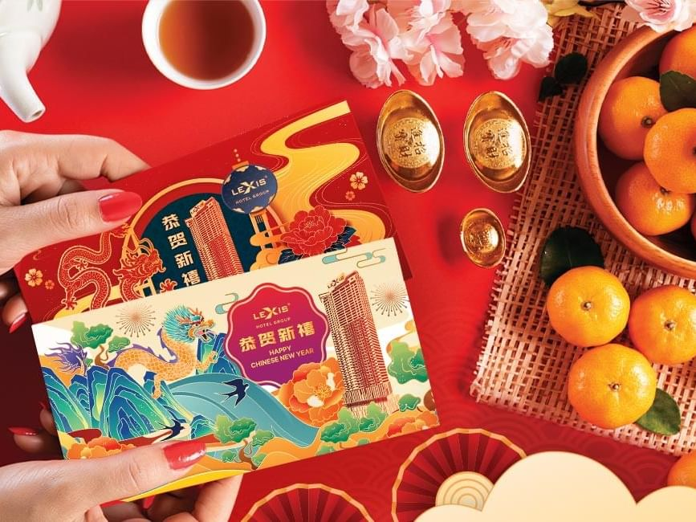
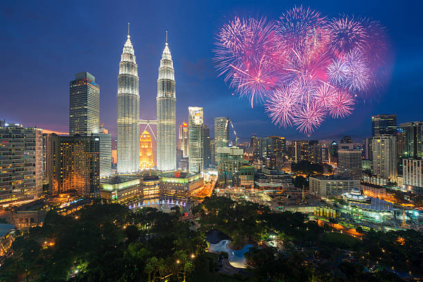
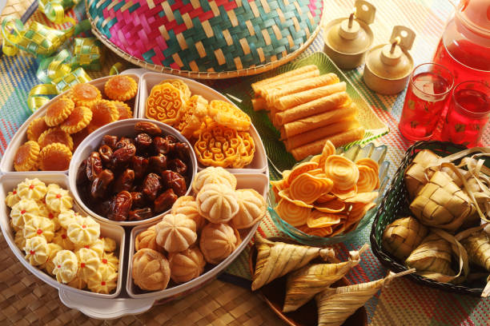
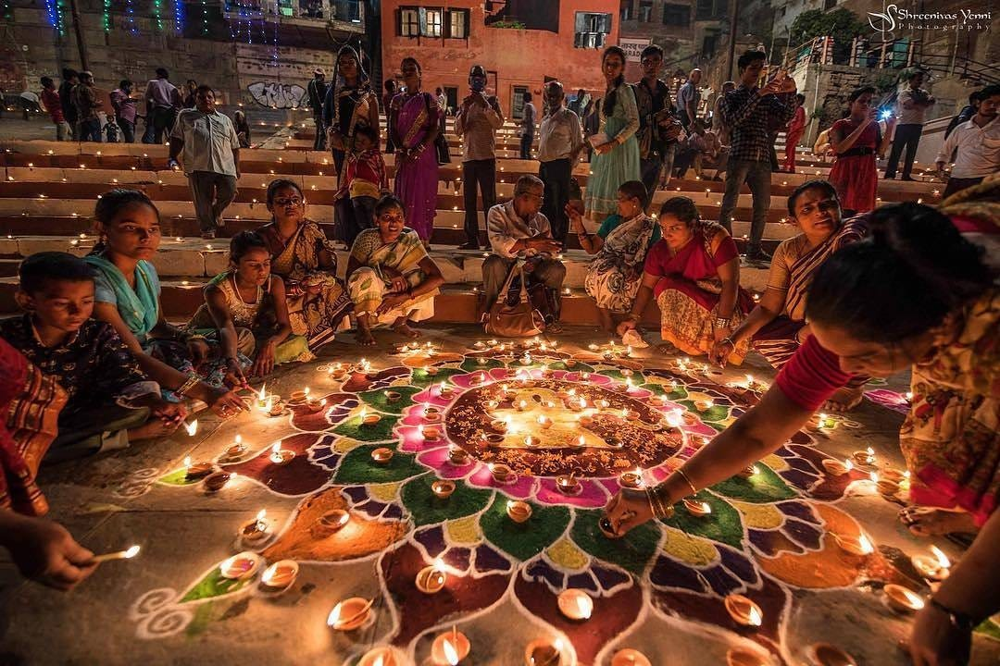
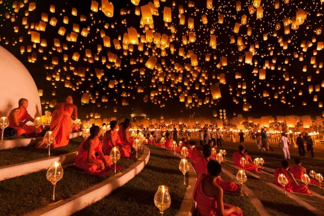
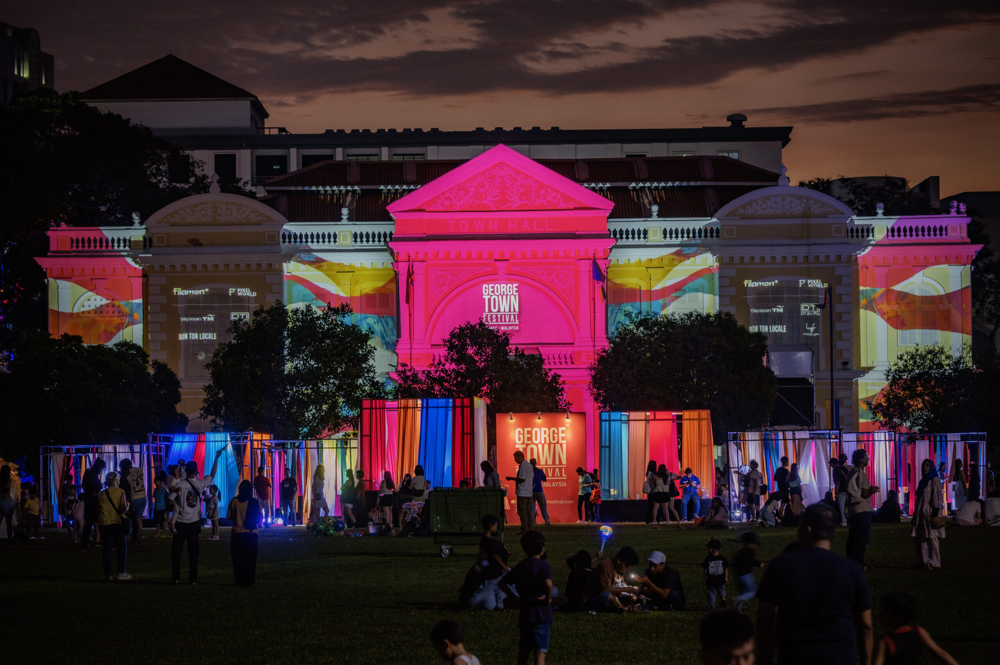
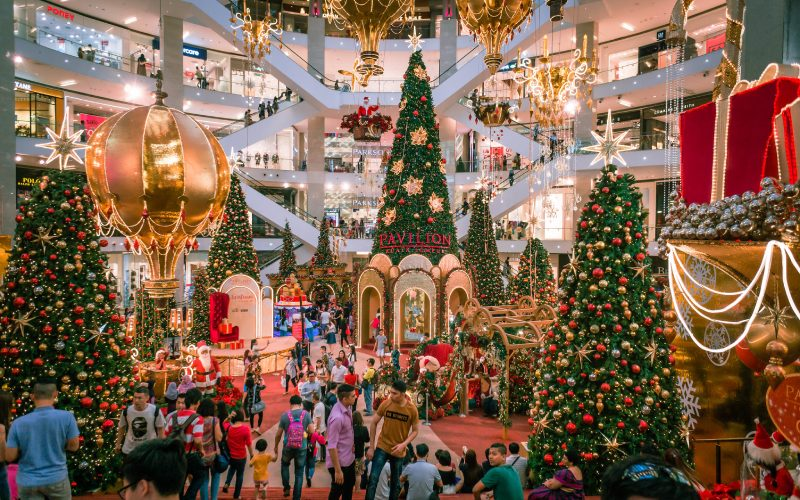

January / FebruaryChinese New Year
One of Penang's largest celebrations, featuring lion dances, lantern decorations, festive markets and family gatherings.

Experience Penang's vibrant culture through traditional festivals, artistic performances, community celebrations and annual events.
Penang's multicultural identity is reflected in its colourful celebrations throughout the year. Visitors can enjoy traditional festivals, cultural performances and community events.
Discover theatre, music, dance and street performances.
Experience traditional celebrations from Penang's diverse communities.
Enjoy festive food, night markets and local delicacies.
Explore some of the most popular celebrations experienced across Penang each year.

January / FebruaryOne of Penang's largest celebrations, featuring lion dances, lantern decorations, festive markets and family gatherings.

Date Changes YearlyA meaningful celebration marking the end of Ramadan with open houses, traditional Malay dishes and cultural activities.

October / NovemberThe Festival of Lights is celebrated with colourful decorations, traditional lamps, Indian food and cultural performances.

September / OctoberFamilies gather to enjoy mooncakes, lantern displays and evening celebrations inspired by Chinese traditions.

July / AugustAn annual arts and cultural event featuring theatre, dance, music, exhibitions and creative performances.

DecemberShopping malls, hotels and churches welcome the festive season with decorations, performances and community activities.
Penang offers celebrations and cultural experiences during different months of the year.
Enjoy festive decorations, traditional performances and lively celebrations.
Seasonal cultural programmes and local community events are held across Penang.
Discover creative performances, exhibitions and international arts programmes.
Experience lantern displays, mooncakes and family-centred celebrations.
Celebrate the Festival of Lights through decorations, food and cultural traditions.
Enjoy festive lights, seasonal events and year-end celebrations.
Events in Penang offer much more than celebrations alone.
Discover creative performances presented by local and international artists.
Experience Penang's food culture through markets and community events.
Learn about Penang's traditions, historical communities and religious heritage.
Follow these simple suggestions when attending popular events in Penang.
Hotels and transport may become busy during major celebrations.
Arriving early can help you find better viewing areas and parking.
Lightweight clothing and comfortable footwear are useful for outdoor activities.
Follow appropriate dress codes and event instructions at cultural locations.
Carry drinking water, especially during daytime outdoor events.
Confirm the date, time and location before travelling to the event.
Discover local attractions, famous food and exciting cultural celebrations throughout your Penang journey.
Explore Attractions